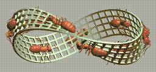

La banda o cinta de Möbius (/ˈmøbiʊs/) o Moebius (/moˈebius/) es una superficie con una sola cara y un solo borde. Tiene la propiedad matemática de ser un objeto no orientable. También es una superficie reglada. Fue descubierta en forma independiente por los matemáticos alemanes August Ferdinand Möbius y Johann Benedict Listing en 1858.